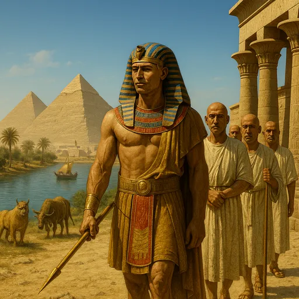

Egipto
Civilización organizada en torno al río Nilo, famosa por sus faraones, pirámides, templos y un complejo sistema de creencias religiosas y funerarias.
El surgimiento de las primeras civilizaciones marcó el paso de pequeñas comunidades agrícolas a sociedades organizadas con ciudades, escritura, leyes y grandes obras arquitectónicas. En lugares como el valle del Nilo, el Mediterráneo y el Lejano Oriente aparecieron culturas que dejaron una huella profunda en la historia humana.
Civilización organizada en torno al río Nilo, famosa por sus faraones, pirámides, templos y un complejo sistema de creencias religiosas y funerarias.
Conjunto de ciudades-estado donde se desarrollaron la filosofía, la democracia, el teatro y nuevas formas de arte que influyen aún hoy en la cultura occidental.

Archipiélago donde se consolidaron tradiciones como el sintoísmo y el budismo, una corte imperial y una cultura que combina naturaleza, arte y organización social propia.